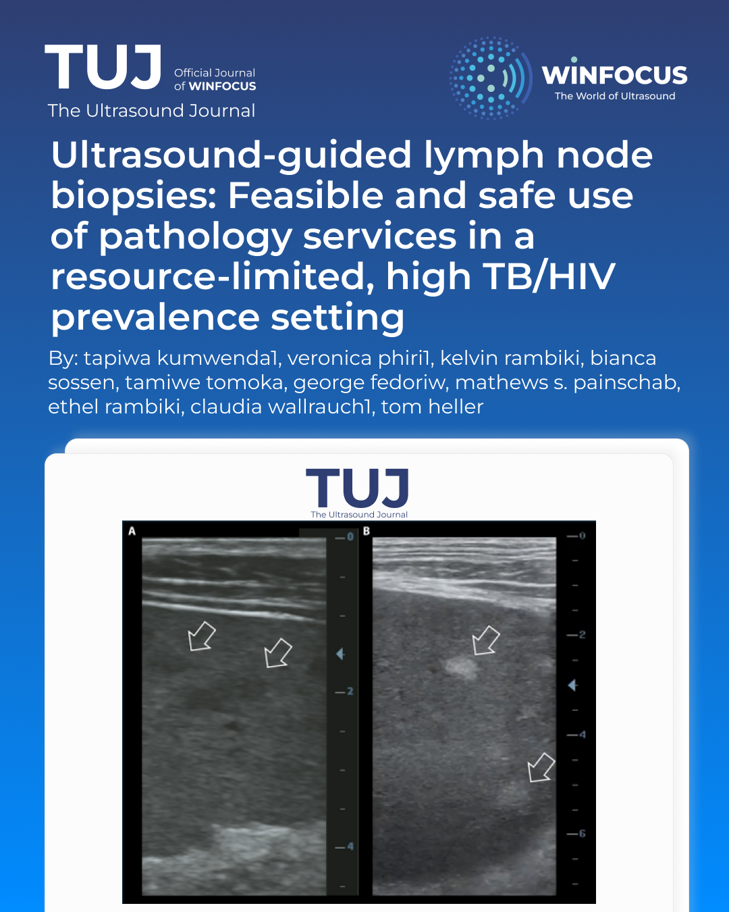

Ultrasound-guided lymph node biopsies: feasible and safe use of pathology services in a resource-limited, high TB/HIV prevalence setting
Keywords:
HIV, lymphadenopathy, ultrasound-guided biopsy, low-resource setting, pathologyAbstract
Background: Enlarged lymph nodes (LN) pose diagnostic challenges for people with HIV (PWH). While tuberculosis (TB) is a common cause in low-income settings, lymphomas and Kaposi’s sarcoma must also be considered. Ultrasound and symptoms cannot distinguish between these conditions, and histology is often needed, but limited resources in low-income countries restrict sampling. To minimize the need for excisional biopsies, we introduced an algorithm for ultrasound-guided core-needle biopsies (CNB) after negative fine-needle aspiration (FNA) results by Xpert-Ultra (Cepheid, USA).
Methods: At the Lighthouse clinic in Lilongwe, Malawi, patients with peripheral lymphadenopathy underwent an ultrasound-guided FNA. Negative Xpert-Ultra results prompted CNB using Tru-Cut needles, with samples sent for pathology. We retrospectively analyzed 12 months of cross-sectional data, including histology results and abdominal ultrasound findings.
Results: In 2024, 53 CNBs were performed, 96%in PWH. No significant complications were observed. A conclusive diagnosis was reached in 77% of cases, with the most common diagnoses being hematological malignancies (54%), reactive LN (15%), Kaposi’s sarcoma (12%) and metastatic carcinoma (10%). Infections, including granulomatous inflammation were found in 10% of cases. Hypoechoic spleen lesions were more frequent in patients with hematological diseases (p=0.03).
Conclusion: Ultrasound-guided CNB of enlarged peripheral LN is a safe, effective addition to routine ART clinics. After negative Xpert-Ultra FNA, hematological malignancies were common. Abdominal ultrasound findings were frequently abnormal overall and hypoechoic spleen lesions were more common in patients with hematological abnormalities.
References
1 Barr DA, Lewis JM, Feasey N, et al. Mycobacterium tuberculosis bloodstream infection
prevalence, diagnosis, and mortality risk in seriously ill adults with HIV: a systematic review
and meta-analysis of individual patient data. Lancet Infect Dis 2020; 20: 742–52.
2 Gupta RK, Lucas SB, Fielding KL, Lawn SD. Prevalence of tuberculosis in post-mortem
studies of HIV-infected adults and children in resource-limited settings: systematic
review and meta-analysis. AIDS 2015; 29: 1987–2002.
3 WHO. Global tuberculosis report 2024.
4 World Health Organization. WHO Tuberculosis profile: African region.
https://worldhealthorg.shinyapps.io/tb_profiles/?_inputs_&tab=%22tables%22&lan=%22E
N%22&entity_type=%22group%22&group_code=%22AFR%22 (accessed June 24, 2025).
5 Mekonnen D, Derbie A, Abeje A, et al. Epidemiology of tuberculous lymphadenitis in
Africa: A systematic review and meta-analysis. PLOS ONE 2019; 14: e0215647.
6 Reddy DL, Venter WDF, Pather S. Patterns of Lymph Node Pathology; Fine Needle
Aspiration Biopsy as an Evaluation Tool for Lymphadenopathy: A Retrospective Descriptive
Study Conducted at the Largest Hospital in Africa. PLOS ONE 2015; 10: e0130148.
7 Antel K, Oosthuizen J, Brown K, et al. Focused investigations to expedite cancer diagnosis
among patients with lymphadenopathy in a tuberculosis and HIV-endemic region. AIDS
2023; 37: 587–94.
8 Rambiki E, Rambiki K, Khalani J, et al. Letters to the Editor Low Rates of Side Effects in
Paclitaxel Chemotherapy for Kaposi Sarcoma and Feasibility of Treatment in Outpatient
ART Clinic Settings in Malawi. J Acquir Immune Defic Syndr 2024; 96: e1–2.
9 Chinula L, Moses A, Gopal S. HIV-associated malignancies in sub-Saharan Africa: progress,
challenges, and opportunities. Curr Opin HIV AIDS 2017; 12: 89–95.
10 Chalya PL, Mbunda F, Rambau PF, et al. Kaposi’s sarcoma: a 10-year experience with
248 patients at a single tertiary care hospital in Tanzania. BMC Res Notes 2015; 8: 440.
11 Wallrauch C. Lymphadenopathy due to Kikuchi-Fujimoto disease – A rare differential
for a common presentation. Malawi Med J 2018; 30: 302.
12 Montgomery ND, Tomoka T, Krysiak R, et al. Practical Successes in Telepathology
Experiences in Africa. Clin Lab Med 2018; 38: 141–50.
13 Ahuja AT, Ying M. Sonographic Evaluation of Cervical Lymph Nodes. Am J Roentgenol
2005; 184: 1691–9.
14 Khanna R, Sharma AD, Khanna S, Kumar M, Shukla RC. Usefulness of ultrasonography
for the evaluation of cervical lymphadenopathy. World J Surg Oncol 2011; 9: 29.
15 Dhana A, Hamada Y, Kengne AP, et al. Tuberculosis screening among HIV-positive
inpatients: a systematic review and individual participant data meta-analysis. Lancet HIV
2022; 9: e233.
16 Dhana A, Hamada Y, Kengne AP, et al. Tuberculosis screening among ambulatory
people living with HIV: a systematic review and individual participant data meta-analysis.
Lancet Infect Dis 2022; 22: 507–18.
17 World Health Organization. WHO consolidated guidelines on tuberculosis. Module 3:
diagnosis. 2025.
18 Kohli M, Schiller I, Dendukuri N, et al. Xpert MTB/RIF Ultra and Xpert MTB/RIF assays 380
for extrapulmonary tuberculosis and rifampicin resistance in adults. Cochrane Database
Syst Rev 2021; 2021. DOI:10.1002/14651858.CD012768.pub3.
19 Heller T, Wallrauch C, Goblirsch S, Brunetti E. Focused assessment with sonography
for HIV-associated tuberculosis (FASH): a short protocol and a pictorial review. Crit
Ultrasound J 2012; 4: 21.
20 Lighthouse Group, Phiri S, Neuhann F, et al. The path from a volunteer initiative to
an established institution: evaluating 15 years of the development and contribution of the
Lighthouse trust to the Malawian HIV response. BMC Health Serv Res 2017; 17: 54.
21 Gopal S, Krysiak R, Liomba NG, et al. Early Experience after Developing a Pathology
Laboratory in Malawi, with Emphasis on Cancer Diagnoses. PLoS ONE 2013; 8: e70361.
22 Montgomery ND, Liomba NG, Kampani C, et al. Accurate Real-Time Diagnosis of
Lymphoproliferative Disorders in Malawi Through Clinicopathologic Teleconferences: A
Model for Pathology Services in Sub-Saharan Africa. Am J Clin Pathol 2016; 146: 423–30.
23 Brownlee AJ, Dewey M, Chagomerana MB, et al. Update on pathology laboratory
development and research in advancing regional cancer care in Malawi. Front Med 2024;
11. DOI:10.3389/fmed.2024.1336861.
24 Antel K, Oosthuizen J, Malherbe F, et al. Diagnostic accuracy of the Xpert MTB/Rif
Ultra for tuberculosis adenitis. BMC Infect Dis 2020; 20: 33.
25 Kong L, Xie B, Liu Q, et al. Application of acid-fast staining combined with GeneXpert
MTB/RIF in the diagnosis of non-tuberculous mycobacteria pulmonary disease. Int J Infect
Dis 2021; 104: 711–7.
26 Belard S, Taccari F, Kumwenda T, Huson MA, Wallrauch C, Heller T. Point-of-care
ultrasound for tuberculosis and HIV—revisiting the focused assessment with sonography
for HIV-associated tuberculosis (FASH) protocol and its differential diagnoses. Clin
Microbiol Infect 2024; 30: 320–7.
27 Bhatia K, Sahdev A, Reznek RH. Lymphoma of the Spleen. Semin Ultrasound CT MRI
2007; 28: 12–20.
28 Adams EC, Antel K, Bailey JL, et al. Diagnostic use of abdominal ultrasound in
detecting extrapulmonary tuberculosis or lymphoma in an HIV-endemic region. South Afr J
HIV Med 2025; 26. DOI:10.4102/sajhivmed.v26i1.1679.
29 Freitag B, Sultanli A, Grilli M, et al. Clinically Diagnosed Tuberculosis and Mortality in
High Burden Settings: A Systematic Review and Meta-Analysis. eClinicalMedicine 2025.
DOI:10.2139/ssrn.5091666.
30 Huson MAM, Kumwenda T, Gumulira J, Rambiki E, Wallrauch C, Heller T. Ultrasound
findings in Kaposi sarcoma patients: overlapping sonographic features with disseminated
tuberculosis. Ultrasound J 2023; 15: 27.

Downloads
Additional Files
Published
Issue
Section
License
Copyright (c) 2026 Tapiwa Kumwenda, Veronica Phiri, Kelvin Rambik, Bianca Sossen, Tamiwe Tomoka, George Fedoriw, Mathews S. Painschab, Ethel Rambiki, Claudia Wallrauch, Tom Heller (Author)

This work is licensed under a Creative Commons Attribution-NonCommercial 4.0 International License.
This is an Open Access article distributed under the terms of the Creative Commons Attribution License (https://creativecommons.org/licenses/by-nc/4.0) which permits unrestricted use, distribution, and reproduction in any medium, provided the original work is properly cited.
Authors retain the copyright for their published work. No formal permission will be required to reproduce parts (tables or illustrations) of published papers, provided the source is quoted appropriately and reproduction has no commercial intent.
How to Cite